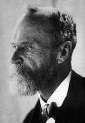

Philosophy Pages
| Dictionary | Study Guide | Logic | F A Q s | ||
|---|---|---|---|---|---|---|
| History | Timeline | Philosophers | Locke | |||
| Philosophy Pages
| Dictionary | Study Guide | Logic | F A Q s | ||
|---|---|---|---|---|---|---|
| History | Timeline | Philosophers | Locke | |||
|
Life and Works . . Psychology . . Meaning . . Truth . . Religion Bibliography Internet Sources |
William James was raised in a highly intellectual household: his father Henry, Sr. was a Swedenborgian theologian, his sister Alice wrote lengthy, literary diaries, and his brother Henry, Jr. became a renowned novelist.
William himself studied art and geology before recieving a professional medical degree from Harvard university, where he taught for thirty-five years.
Despite an energetic constitution, James struggled throughout life with such severe bouts of hypochondria, melancholy, and depression that he regarded himself as persisting only by means of a deliberate effort of will.
Upon his death, however, a friend expressed great respect for James's wisdom, integrity, and equanimity.

Work in psychology with Hugo Munsterburg at Harvard resulted in publication of James's Principles of Psychology (1890), the classic exposition of a discipline in transition from reliance upon anecdotal introspection toward its experimental foundations as a natural science. James himself emphasized the notion of the individual self or person as a continuous "stream of consciousness" capable of exercising free will.
In Pragmatism: A New Name for some Old Ways of Thinking (1907) James offered significant expansions of C.S. Peirce's philosophy of pragmatism.  He not only accepted Peirce's method of using pragmatic meaning to resolve dispute, but also spelled out a pragmatic theory of truth as whatever is "expedient in the way of our thinking." During the same period, James wrote the mature expression of his epistemological principles that was published posthumously in Essays in Radical Empiricism (1912). There, his application of empirical principles results in neutral monism as a foundation for a phenomenalist analysis of human experience.
Since for James it was the consequences of believing that matter, he argued in
"The Will to Believe" (1897) that belief must remain an individual process and that
we may rationally choose to believe some crucial propositions even though they lie beyond the reach of reason and evidence.
This position has important
implications for religious convictions in particular, which James explored in detail in
The Varieties of Religious Experience (1902).

A frequent commentator on public affairs, James proposed a system of national voluntary service in The Moral Equivalent of War (1906).
|
Recommended Reading:
Primary sources:
Secondary sources:
Additional on-line information about James includes:
|